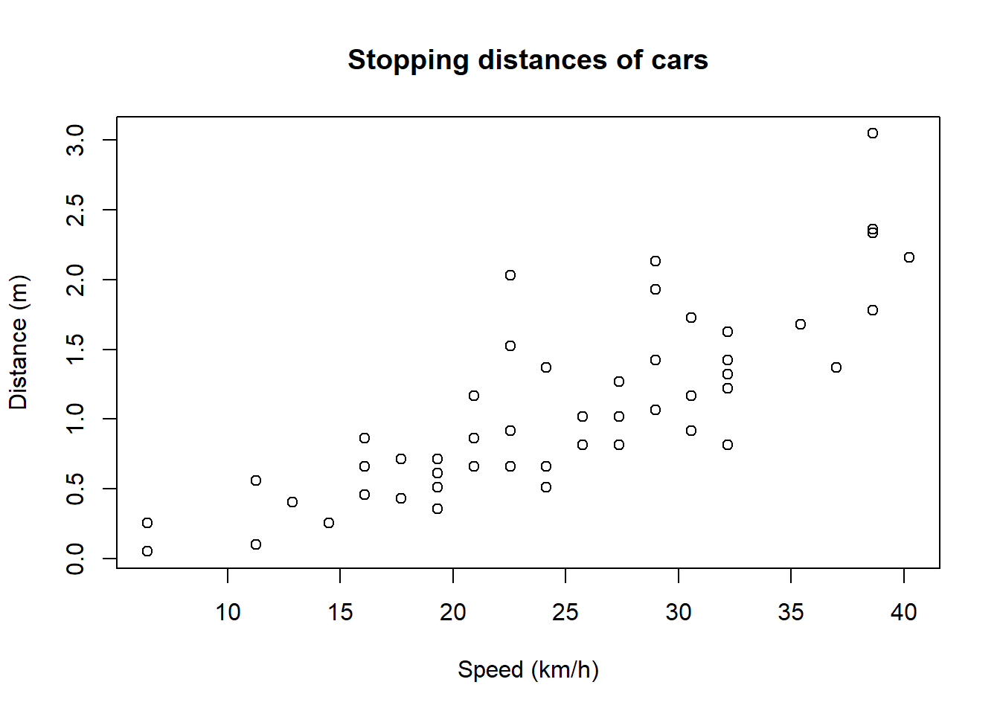
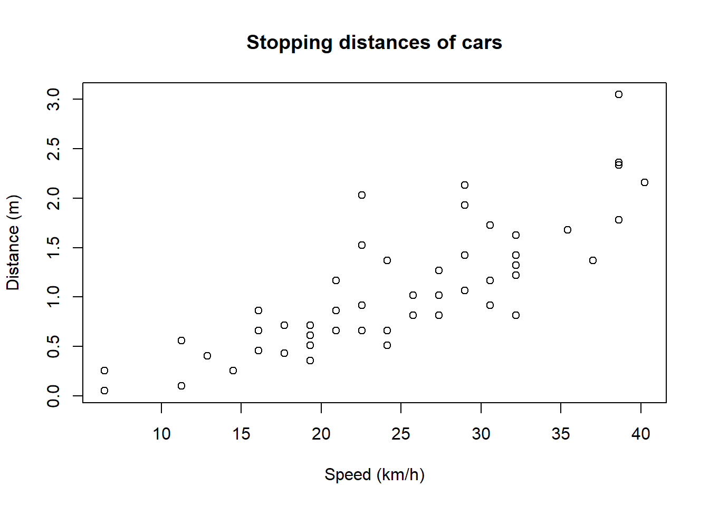
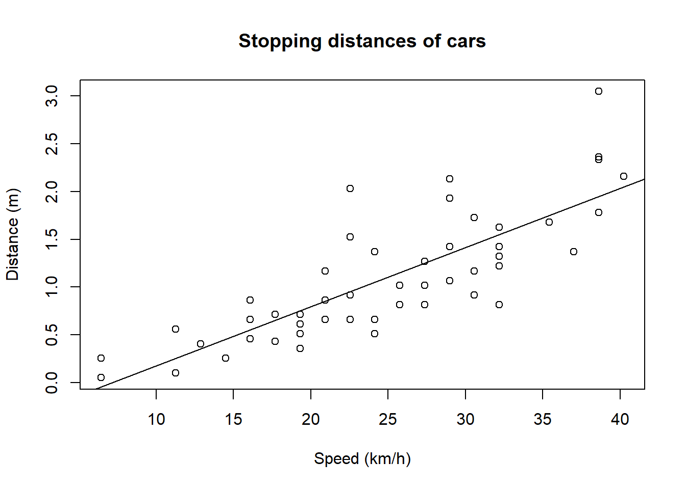
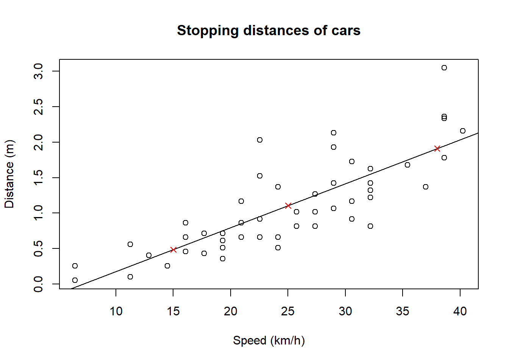
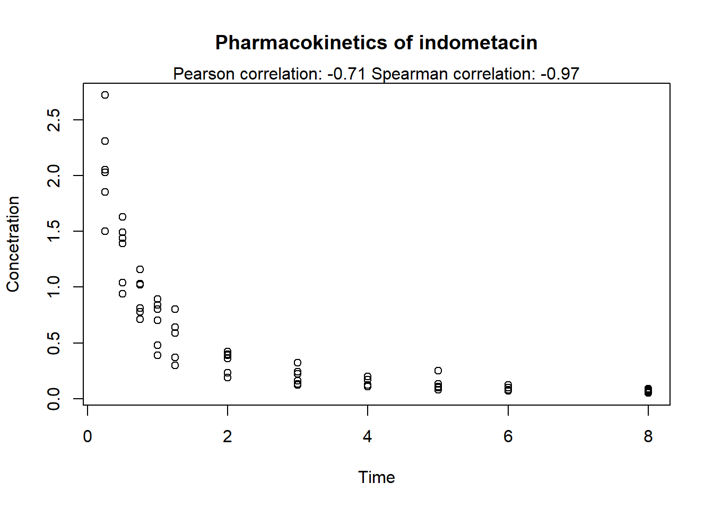

# Change to SI units
cars$speed <- cars$speed * 1.60934
cars$dist <- cars$dist * 0.0254
# Scatter plot
plot(
cars$speed,
cars$dist,
xlab = "Speed (km/h)",
ylab = "Distance (m)",
main = "Stopping distances of cars"
)
Lineaarisessa mallissa eli lineaarisessa regressiossa tavoite on arvioida vastemuuttujan lineaarista riippuvuutta selittävistä muuttujista. Käytetään esimerkkinä R:n sisäistä dataa cars, joka sisältää 50 auton nopeudet ja pysähtymismatkat. Tavoitteena on tutkia, miten auton pysähtymismatka riippuu auton nopeudesta.
Yksinkertaisin mahdollinen lineaarinen regressiomalli on:
\[ y = \beta_0 + \beta_1 x_1 + \epsilon \]
Mallissa siis oletetaan, että auton pysähtymismatka nopeudella 0 km/h on \(\beta_0\) ja kasvaa \(\beta_1\) verran, kun nopeus kasvaa 1 km/h. Lisäksi mukana on virhetermi \(\epsilon\), joka selittää satunnaisen vaihtelun tuloksissa lineaarisen käyrän ympärillä.
Jos malliin halutaan lisätä selittäviä muuttujia, kuten auton jarrujen kunto (\(x_2\)) tai sääolosuhteet (\(x_3\)), malli näyttää tältä:
\[ y = \beta_0 + \beta_1 x_1 + \beta_2 x_2 + \beta_3 x_3 + \ldots + \epsilon \]
Eli jokaiselle selittävälle muuttujalle annetaan oma regressiokerroin.
Muutetaan ensin cars-aineiston muuttujat meille tuttuihin yksiköihin, ja piirretään hajontakuvio havainnoista:
# Change to SI units
cars$speed <- cars$speed * 1.60934
cars$dist <- cars$dist * 0.0254
# Scatter plot
plot(
cars$speed,
cars$dist,
xlab = "Speed (km/h)",
ylab = "Distance (m)",
main = "Stopping distances of cars"
)
Autojen välillä on eroja, mutta kuten voi odottaa, suuremmilla nopeuksilla auton pysähtymismatka kasvaa. Käytetään seuraavaksi R:n funktiota lm, jolla voidaan sovittaa dataan lineaarinen malli:
model <- lm(dist ~ speed, data = cars)lm-funktiolle annetaan ensimmäiseksi argumentiksi lineaarisen mallin kaava, jossa ~ korvaa yllä nähdyn yhtäkuin-merkin. HUOM: vakiotermi on automaattisesti mukana, eli sitä ei tarvitse kirjata erikseen. Lisäksi täytyy antaa argumentti data, jonka tulee olla datakehikko, josta kaavassa olevat muuttujat löytyvät.
Lineaarisesta mallista saadaan irti paljon tietoa, tärkeimpinä mallin regressiokertoimet (coefficients), jotka saadaan näkyviin funktiolla coef, jolle annetaan argumenttina lineaarisen mallin sisältävä objekti model.
coef(model)(Intercept) speed
-0.44650901 0.06206469 Yllä olevista kertoimista voidaan päätellä, että kun auton nopeus kasvaa 1 km/h niin sen pysähtymismatka kasvaa keskimäärin noin 0.06 m, ja odotettu kasvukäyrä leikkaa \(y\)-akselin -0.4 m kohdalla. Voimme piirtää tämän käyrän kuvaajaan abline-funktion avulla, antamalla sille mallin kertoimet:
cf <- coef(model)
plot(
cars$speed,
cars$dist,
xlab = "Speed (km/h)",
ylab = "Distance (m)",
main = "Stopping distances of cars"
)
abline(a = cf[1], b = cf[2])
Muihin mallin tietoihin pääsee käsiksi summary-funktion avulla, joko tulostamalla tuloksen konsoliin, tai sijoittamalla sen muuttujaan, josta voi etsiä mallin tietoja.
# Print summary information
summary(model)
Call:
lm(formula = dist ~ speed, data = cars)
Residuals:
Min 1Q Median 3Q Max
-0.73835 -0.24194 -0.05771 0.23405 1.09731
Coefficients:
Estimate Std. Error t value Pr(>|t|)
(Intercept) -0.446509 0.171664 -2.601 0.0123 *
speed 0.062065 0.006558 9.464 1.49e-12 ***
---
Signif. codes: 0 '***' 0.001 '**' 0.01 '*' 0.05 '.' 0.1 ' ' 1
Residual standard error: 0.3906 on 48 degrees of freedom
Multiple R-squared: 0.6511, Adjusted R-squared: 0.6438
F-statistic: 89.57 on 1 and 48 DF, p-value: 1.49e-12# Save summary and access specific information
s <- summary(model)
s$r.squared[1] 0.6510794summary kertoo mm. regressiokertoimien arvojen lisäksi niihin liittyvät p-arvot kohdassa Pr(>|t|), sekä mallin selitysasteen (merkintätapa johtuu siitä, että p-arvot tulevat \(t\)-testeistä). Tässä tapauksessa muuttujan speed p-arvo on hyvin pieni, joten voimme todeta suurella varmuudella, että autojen pysähtymismatka riippuu (lineaarisesti) auton nopeudesta. \(R^2\) eli R-squared kertoo, kuinka suuren osuuden pysähtymismatkojen varianssista auton nopeus selittää.
Mallin regressiokerrointen estimoitu kovarianssimatriisi saadaan funktiolla vcov (variance-covariance matrix). Kertoimien keskivirheet saadaan tästä edelleen helposti matriisin diagonaalin neliöjuurina (funktiot diag ja sqrt):
# Covariance matrix of the regression coefficients
vcov(model) (Intercept) speed
(Intercept) 0.029468659 -1.065882e-03
speed -0.001065882 4.300714e-05# Standard errors only
sqrt(diag(vcov(model)))(Intercept) speed
0.171664380 0.006557983 Kun lineaarinen malli on estimoitu, sen perusteella voidaan myös ennustaa arvoja uusille havainnoille. Tämä tapahtuu predict-funktiolla, jolle annetaan malli, sekä datakehikko, joka sisältää ne selittäjien arvot, joille halutaan laskea ennusteet. Tämä datakehikko voi sisältää useita rivejä, jolloin ennuste lasketaan joka riville. Ennustetaan edellisen mallin perusteella pysähtymismatka autolle kolmella uudella nopeudella ja lisätään ne edelliseen kuvaajaan punaisilla rukseilla:
# Create data frame with new speed values
new_data <- data.frame(speed = c(25, 15, 38))
# Create dist column by predicting from linear model
new_data$dist <- predict(model, newdata = new_data)
# Add points to previous plot
plot(
cars$speed,
cars$dist,
xlab = "Speed (km/h)",
ylab = "Distance (m)",
main = "Stopping distances of cars")
abline(a = model$coefficients[1], b = model$coefficients[2])
points(new_data$speed, new_data$dist, pch = 4, col = "red")
Kuten huomataan, ennustetut arvot ovat täsmälleen käyrän päällä.
Korrelaatio on lineaarisen regression ohella tapa mitata kahden muuttujan välistä riippuvuutta. Korrelaatiolle on monia erilaisia mittareita, joista yleisimmät ovat Pearsonin korrelaatiokerroin, joka mittaa kahden muuttujan välistä lineaarista riippuvuutta, ja Spearmanin järjestyskorrelaatiokerroin, joka mittaa kahden muuttujan välistä riippuvuutta ilman lineaarisuusoletusta, mutta olettaa kuitenkin monotonisen riippuvuuden. HUOM: korrelaatio ei ota kantaa siihen, kuinka vahva riippuvuus on (käyrän jyrkkyys), vaan pelkästään siihen, kuinka systemaattinen riippuvuus on. Kummatkin korrelaatiokertoimet saavat arvoja väliltä [-1, 1], jossa -1 on täydellinen negatiivinen korrelaatio (toisen muuttujan kasvaessa toinen aina pienenee) ja 1 on täydellinen positiivinen korrelaatio.
Korrelaation kahden vektorin välillä voi R:ssä laskea funktiolla cor. Otetaan esimerkiksi R:n sisäinen aineisto Indometh, jossa on mitattu indometasiinin farmakokinetiikkaa, ja selvitetään ajan ja indometasiinin konsentraation väliselle riippuvuudelle Pearsonin ja Spearmanin korrelaatiokertoimet. Piirretään sen jälkeen hajontakuvio mittaustuloksista ja lisätään kuvaajaan alaotsikoksi korrelaatiokertoimet. Tutustumme samalla funktioon round, jolla voi pyöristää lukuja halutulle desimaalitarkkuudelle. Huomaa, että round-funktio pyöristää aina lähimpään parilliseen lukuun, esim. luku 0.5 pyöristyy lukuun 0, mutta 1.5 pyöristyy lukuun 2. Funktio mtext lisää tekstin kuvaajan marginaaliin.
# Pearson correlation
pearson <- cor(Indometh$time, Indometh$conc, method = "pearson")
# Spearman correlation
spearman <- cor(Indometh$time, Indometh$conc, method = "spearman")
# Scatter plot
plot(
Indometh$time,
Indometh$conc,
xlab = "Time",
ylab = "Concetration",
main = "Pharmacokinetics of indometacin"
)
# Paste concatenates strings
subtitle <- paste(
"Pearson correlation:", round(pearson, digits = 2),
"Spearman correlation:", round(spearman, digits = 2)
)
# Add subtitle to plot
mtext(subtitle)
Tässä esimerkissä nähdään hyvin Pearsonin ja Spearmanin korrelaatiokertoimien ero. Koska Indometasiinin konsentraatio laskee eksponentiaalisesti, ei lineaarisesti, Pearsonin korrelaatiokerroin on “vain” -0.7, kun taas Spearmanin korrelaatiokerroin -0.97 vastaa lähes täydellistä negatiivista korrelaatiota.